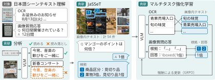

シーン画像に含まれる文字情報に基づいて質問に答えるには、回答の根拠となる文字列を漏れなく読み取ることが重要である。しかし、公開されている21種類の視覚言語モデル（VLM）の評価から、個々の文字領域の認識に比べ、画像全体から文字情報を漏れなく読み取ることに課題があると分かった。また、文字の読み取りと質問応答をともに学習するための、文字列と各回答の根拠を同じ日本語シーン画像に対応付けた学習資源は限られる。そこで本研究では、画像生成モデルを用いて、文字列と質問・回答・根拠を対応付けた日本語合成シーンテキストデータセット JaSSeT を構築する。このデータを用い、 OCR と画像質問応答を組み合わせたマルチタスク強化学習を行って性能の改善を図る。実験では、学習前に比べて JaWildText におけるシーンテキスト理解性能の向上を確認した。出力の分析では、小さい文字や文字領域の多い画像において読み取りが改善していることを明らかにした。

アブストラクト
引用
@misc{maeda2026jasset,
title = {日本語シーンテキスト理解に向けた合成データを用いたOCRと画像質問応答のマルチタスク学習},
author = {前田 航希 and 岡崎 直観},
year = {2026},
howpublished = {Project repository},
url = {https://github.com/llm-jp/jasset}
}プロジェクトの暫定的な引用情報です。論文公開後に更新します。